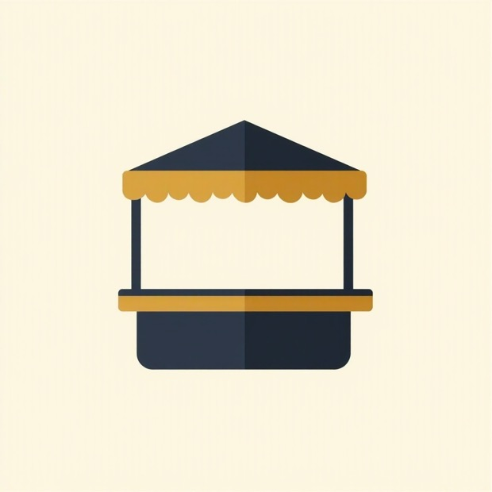
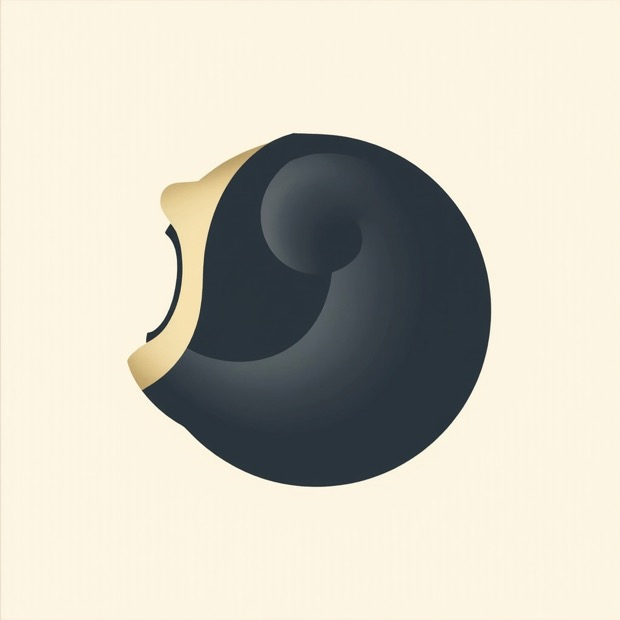

Generated marks come back as flat pictures — no paths, no control, wrong at small sizes. They are useful for one thing: showing you an idea you had not drawn yet. This one was worth keeping.

The idea
A pitched roof over a scalloped valance, posts, a counter. Harder to mistake for anything else than the dome I had drawn.
The variant
Same anatomy, colours swapped. Confirmed the shape holds when gold and ink change places — which the lockups need.
Canopy
Six paths on a 64 px grid. Scales, recolours, exports, and every edge is a number you can change.
30 px and 16 px
Posts and counter box removed, roof and valance fattened. A separate drawing, not a shrunk copy.

It cannot draw a cowrie
Asked for a cowrie shell three times and got a nautilus with a gradient, a bitten biscuit, and a peach. The toothed aperture — the one feature that makes a cowrie a cowrie, and the thing every Ghanaian recognises — never appeared once. The hand-drawn cowrie on the directions sheet stays.
Worth knowing before you spend on this again: generation is good for finding a composition you had not considered, and bad at any mark whose meaning lives in a small, specific detail.